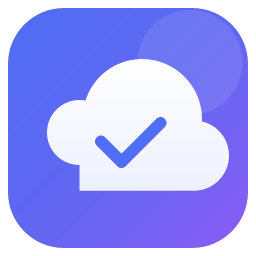

Nuvem
Suas pastas do computador e do Google Drive (ou OneDrive) sempre iguais — nos dois sentidos, sem painel cheio de opções.
Aplicativo de desktop para Linux e Windows. A sincronização é feita pelo motor bisync do rclone, embutido no pacote: não é preciso instalar nada além do Nuvem.
Baixar
Debian, Ubuntu, Mint.debsudo apt install ./Nuvem_*.deb
Qualquer LinuxAppImage, sem instalar
Flatpakisolado, com bandeja
Windows 10/11instalador
.exeBaixar a versão mais recente →
O que ele faz
- Sincronização bidirecional (bisync): o que muda de um lado aparece do outro.
- Google Drive e OneDrive, com o projeto OAuth do próprio app.
- Conflitos lado a lado, para você escolher qual versão fica.
- Trava de segurança: se um dos lados esvaziar, a sincronização para em vez de apagar o outro.
- Bandeja do sistema, iniciar com o sistema, notificações, limites de banda, tema claro/escuro.
- Sem telemetria e sem servidor: os dados vão do seu computador direto para o Google ou a Microsoft.